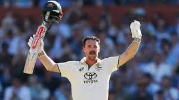

ऑस्ट्रेलिया की धमाकेदार वापसी!
बॉर्डर-गावस्कर ट्रॉफी 2024 में ऑस्ट्रेलिया ने दूसरे टेस्ट मैच में जबरदस्त वापसी करते हुए मात्र तीसरे दिन ही भारत को 10 विकेट से हराकर सीरीज में 1-1 की बराबरी कर ली है। यह मैच पिंक बॉल टेस्ट था और ऑस्ट्रेलिया की धरती पर खेला गया। मैच में कई रोचक पल और विवाद देखने को मिले, जिससे यह मुकाबला यादगार बन गया।
पहली पारी: भारतीय बल्लेबाजी विफल
भारतीय टीम ने पहले बल्लेबाजी करते हुए निराशाजनक प्रदर्शन किया और पहली पारी में सिर्फ 180 रनों पर सिमट गई। भारतीय बल्लेबाज कंगारू गेंदबाजों के सामने टिक नहीं सके। कप्तान पैट कमिंस, मिचेल स्टार्क, और स्कॉट बोलैंड ने घातक गेंदबाजी की। इस मामूली स्कोर के चलते भारतीय गेंदबाजों पर मैच में वापसी कराने की पूरी जिम्मेदारी आ गई।
ऑस्ट्रेलिया की पहली पारी: ट्रैविस हेड का जलवा
पहले दिन का अंत ऑस्ट्रेलिया के लिए मजबूत स्थिति में हुआ। जसप्रीत बुमराह ने शुरुआती सफलता दिलाई, लेकिन ऑस्ट्रेलिया ने 1 विकेट पर ठोस शुरुआत कर ली थी। दूसरे दिन का खेल रोमांचक रहा। भारतीय गेंदबाज मोहम्मद सिराज और जसप्रीत बुमराह ने शुरुआती विकेट लेकर उम्मीदें जगाईं। ऑस्ट्रेलिया 103 रन पर 3 विकेट गंवा चुका था, लेकिन इसके बाद ट्रैविस हेड ने भारतीय गेंदबाजों को धराशायी कर दिया। हेड ने 140 रनों की धुआंधार पारी खेली और मार्नस लाबुशेन के साथ 65 रनों की साझेदारी कर टीम को मजबूती दी। उनके बाद मिचेल मार्श और एलेक्स कैरी ने भी उपयोगी पारियां खेलीं। सिराज ने आखिर में वापसी कराई और ऑस्ट्रेलिया को 337 रनों पर ऑल आउट किया।
विवाद: सिराज बनाम हेड
मैच के दौरान ट्रैविस हेड और मोहम्मद सिराज के बीच तीखी नोकझोंक हुई। दोनों के बीच मैदान पर गरमागरमी देखने को मिली, लेकिन मैच के बाद दोनों ने दोस्ती कर ली।
दूसरी पारी: भारतीय बल्लेबाजी फिर नाकाम
भारतीय टीम दूसरी पारी में भी कुछ खास नहीं कर सकी और 175 रनों पर ढेर हो गई। स्टार्क, बोलैंड, और कमिंस ने एक बार फिर भारतीय बल्लेबाजों को परेशानी में डाल दिया। ऑस्ट्रेलिया को जीत के लिए सिर्फ 19 रनों की जरूरत थी, जिसे उन्होंने बिना किसी परेशानी के हासिल कर लिया।
पिंक बॉल टेस्ट में ऑस्ट्रेलिया की तैयारी दिखी
यह साफ दिखा कि ऑस्ट्रेलिया पिंक बॉल टेस्ट के लिए पूरी तैयारी के साथ मैदान पर उतरा था। उनकी गेंदबाजी और बल्लेबाजी दोनों ही भारतीय टीम पर भारी पड़ीं।
आगे की राह
अब दोनों टीमें 1-1 से बराबरी पर हैं और सीरीज का तीसरा टेस्ट निर्णायक साबित होगा। क्या भारतीय टीम अपनी कमजोरियों को सुधार पाएगी, या ऑस्ट्रेलिया सीरीज पर कब्जा जमाएगा? यह देखना दिलचस्प होगा।
मुख्य बिंदु
- भारतीय बल्लेबाजी दोनों पारियों में कमजोर रही।
- ट्रैविस हेड ने ऑस्ट्रेलिया की जीत में अहम भूमिका निभाई।
- सिराज और हेड के बीच विवाद चर्चा का विषय रहा।
- ऑस्ट्रेलियाई गेंदबाजों ने शानदार प्रदर्शन किया।
अगला मुकाबला निर्णायक होगा, और भारतीय प्रशंसकों को अपनी टीम से बेहतर प्रदर्शन की उम्मीद है।
About the Article
THIS ARTICLE DISCUSSES THE ONGOIN TEST SERIES MATCHES BETWEEN INDIA AND AUSTRALIA